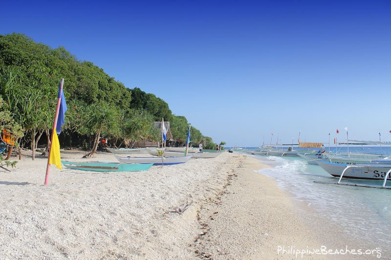
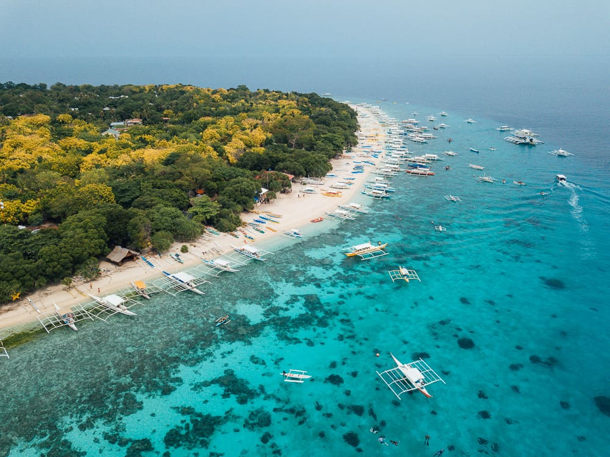

Balicasag Island is a small island off the coast of Panglao, Bohol, Philippines. It is a marine sanctuary since 1985, and is renowned for its crystal-clear waters, stunning coral formations, and diverse marine life. The island is a paradise for snorkelers and divers alike, with a variety of world-class dive sites teeming with an abundance of marine life, including colorful tropical fish, majestic sea turtles, jackfish, barracuda and vibrant corals.
Given the activities that are tied to Balicasag Island, the best time to visit the said tourist site is during the summer months - from March to May. You’ll get to have a complete view of the majestic offerings during this time compared to when there is rain disrupting the view.
If you’re a beginner looking for some fun adventure, Balicasag Marine Sanctuary is the one for you. Visitors see this as a paradise to photographers primarily because of the 200-meter drop-off highlight of this area. Due to the nature of the drop, there’s a large possibility that you’ll get to spot a huge school of jocks which will be a great collection for your huge portfolio.
As the name says, Turtle Point is a must-visit destination if you want an in-depth experience with turtles.
The creatures living in this area are already used to foreign objects to the point that they’ll feel comfortable
swimming around you. Coupled with these are the picturesque features of the coral gardens and underwater caves
housing the said sea creatures.
Although the turtles are comfortable with people surrounding them, make sure not to take advantage of this as
they get stressed whenever there’s someone touching them aggressively.
When we say the Black Forest, people would always think about the cake, and in this case, that’s not wrong.
When you visit the Black Forest diving spot, you’ll witness the black corals blending with the waters.
Unlike the Balicasag Marine Sanctuary, this spot is more preferred by professionals due to the steep slope,
measured at a depth of 40-meters, that it features.
Given the deepness of the area, it is expected to feature-rich marine life forms such as barracudas, gorgonians,
snappers, batfish, groupers, tuna, napoleons, Moorish idols, trumpet fish, angelfish, puffers, and more.
Going to Royal Garden is probably a combination of experience between Balck Forest and Turtle Point.
Most visitors peg it as one of the best sites to dive when you’re on Balicasag Island.
For one, you’ll encounter huge sea turtles that will definitely make up your day. Partnered with these are the
striking coral gardens that are definitely unique within the area. Just like the Black Forest, the Royal Garden
also offers a rich collection of fishes such as the moray eels, anemonefish, and bluefin trevally which gives
more color to the palace than the underwater site provides you.